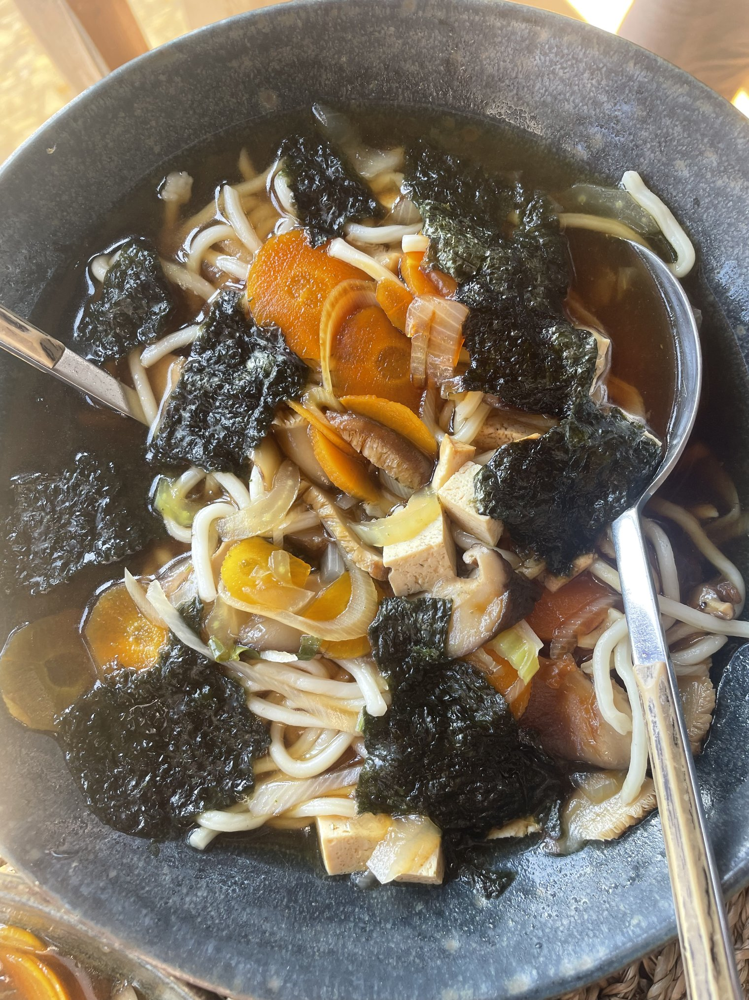

Ramen de zanahoria, tofu, cebolla y pak choi
Ingredientes
2×
- 1 cebolla
- 1 zanahoria
- aceite
- 750 ml de caldo de verduras
- 2 cdas de salsa de soja
- 150 g de tofu
- 1 pak choi
- 2 raciones de fideos de ramen
- alga nori

Preparación
Paso 1
Saltear 1 cebolla en tiras y 1 zanahoria en rodajas con un poco de aceite.
Paso 2
Añadir 750 ml de caldo de verduras, 2 cdas de salsa de soja y 150 g de tofu en dados, y cocer 10min. Añadir 1 pak choi troceado los últimos 2min.
Paso 3
Cocer 2 raciones de fideos de ramen, repartir en los boles y verter el caldo con las verduras. Servir con alga nori en trozos.
Resumen
1 cebolla
1 zanahoria
aceite
Saltear
750 ml de caldo de verduras
2 cdas de salsa de soja
150 g de tofu
1 pak choi
cocer
2 raciones de fideos de ramen
alga nori
Cocer